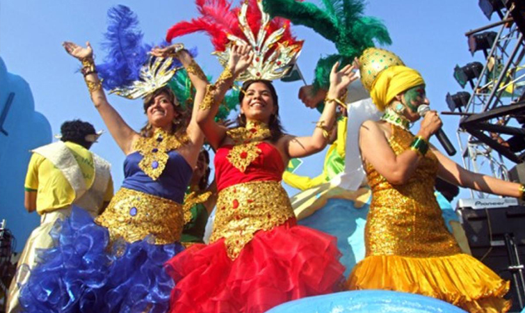
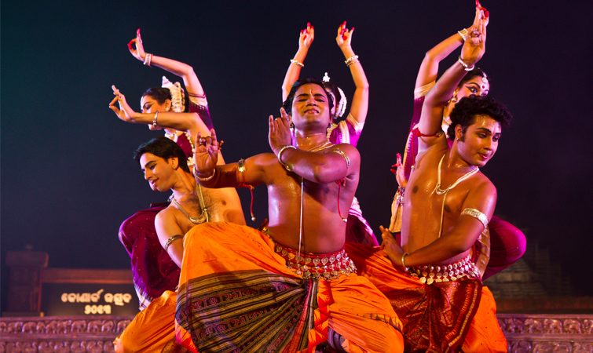
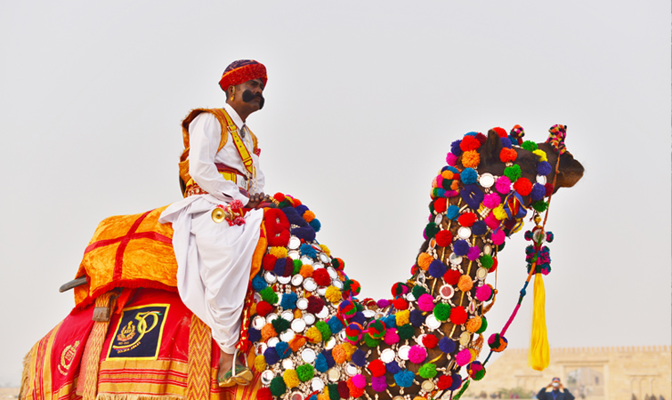
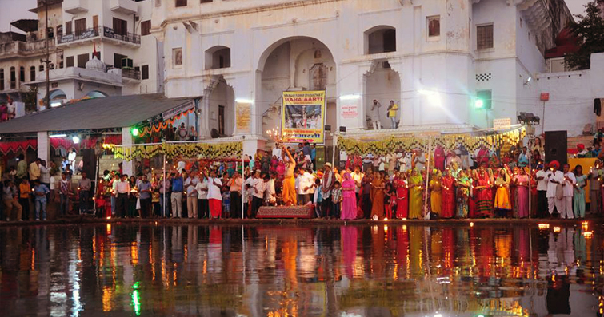

know a fest
Goa Carnivals
One of the most eagerly awaited festivals in Goa, the ‘Goa Carnival’ attracts thousands of tourists, both local and international. The streets of Goa come to life with singers, dancers and musicians in every nook and corner. Main highlight of the ‘Goa Carnival’ is its parade in which hundreds of locals take part and are accompanied with drummers, musicians, dancers, acrobats, clowns and fire-eaters. Carnival also features short skits and plays depicting the ancient culture of Goa. Feasting and merry-making is the only motto .
Konark Festivals
The scintillating ‘Konark Festival’ is held in the month of February every year in Odisha with the World Heritage Site, Konark Temple, serving as its backdrop. Promoting different classical and traditional art forms of India, ranging from Bharatnatyam, Odissi, Kathakali to Manipuri and Kuchipudi, the festival is a great attraction for art and music lovers around the world. Besides the dance festivities, tourists can also attend the exhibition of Odissi temple wall sculptures to get an insight into the craftsmanship of artisans belonging.
Jaisalmer Desert Festivals
The 3 day long ‘Jaisalmer Desert Festival’ is held every year in the month of February on the land of golden sand, Jaisalmer in Rajasthan. A true spectacle of Rajasthani culture and traditions with bright colourful costumes, Gair and Fire dances, acrobat performances, camel races and live folk dance performances, this fair is a must visit for both national and international tourists. Some of the other interesting events like ‘Mr. Desert’ competition, turban-tying contest and ‘longest moustache’ competition are truly a treat to.
Pushkar-fair
Celebrated in the month of November every year in the holy city of Pushkar in Rajasthan, the ‘Pushkar Fair’ is India’s most fascinating festivals that draws thousands of tourists from all over the world. Considered to be one of the largest cattle fairs in the world, you will find hundreds of Rajasthani farmers and traders gather at the ‘Pushkar Fair’ to sell and buy camels and other livestock. Camel races, folk dances, acrobat performances, magic and puppet shows and what not; the ‘Pushkar Fair’ is a perfect platform to witness old Indian cultures
Subscribe to carnival news
Enter your email address to subscribe and receive notifications
Support the carnival
Contact the chair Bisson about sponsorship opportunities
7896543210
carnivalmickey@hotmail.com
Recommended tour packages
- Puri Jagannath dham yatra
- Kerala Travel and tour packages
- Rajasthan deserts